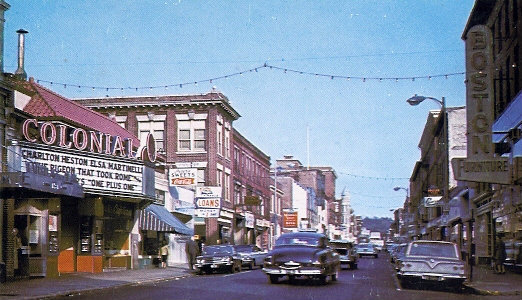
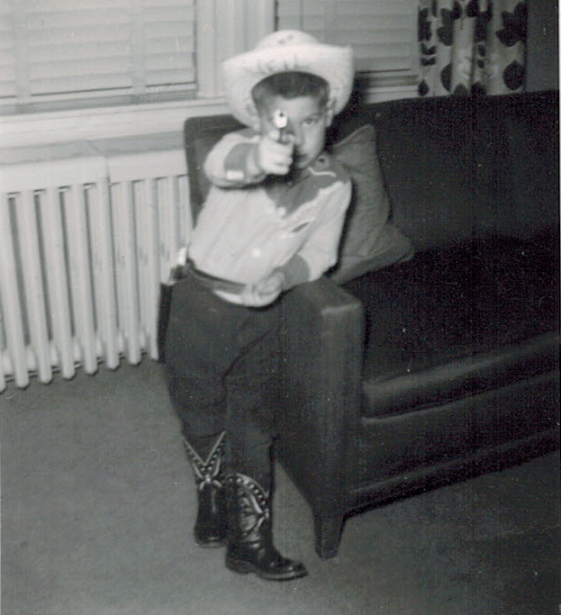
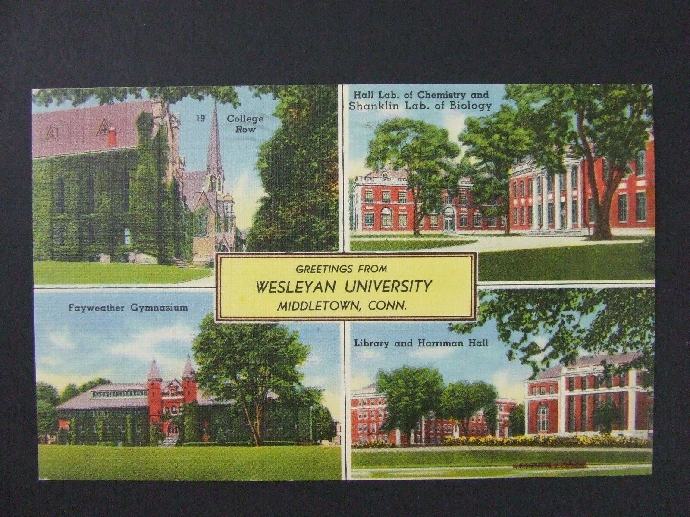

Where It All Began

Haverhill, Massachusetts was once the premier shoe manufacturing cities in America. Yet today the shoe factories are all gone and Haverhill's fame is derived from gang violence, petty crime, and the extraordinarily thick Boston accents of its inhbitants. For more about my hometown, click here.
A Tendency Toward Delusion

Here we see Neil's early agressiveness in full display as he points a handgun at the photographer. Besides being attired in a 1950s cowboy suit, his childhood yearning for recognition can be clearly seen in the name "Neil" written in enormous letters beneath the prim of his 3-gallon hat. For more about Neil's early psychological struggles, click here.
All Downhill From There

Neil was first introduced to dank nugs when he entered Wesleyan University in Middletown, Connecticut in the fall of 1968. Vietnam protests, rock concerts, and co-ed dorms quickly followed. The rest is history.